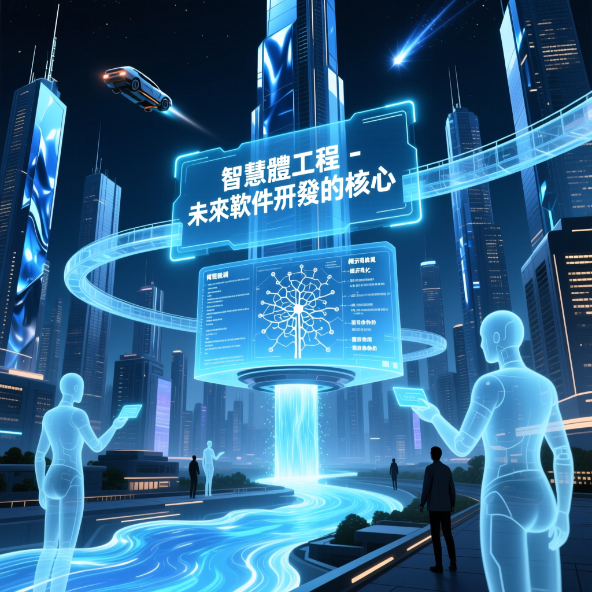

前OpenAI聯合創始人兼特斯拉AI總監Andrej Karpathy分享了他對當前人工智慧（AI）發展的深刻見解，強調隨著AI技術的快速進步，軟體開發領域正在經歷一場範疇革命。

在近日的一場技術報告中，Andrej Karpathy分享了他對當前人工智慧（AI）發展的深刻見解。Karpathy指出，隨著AI技術的快速進步，特別是大語言模型的崛起，軟體開發領域正在經歷一場範疇革命。傳統的程式設計方式已經無法滿足新時代的需求，而基於智慧體的氛圍程式設計和提示詞程式設計正成為主流。
本次報告揭示了AI技術的最新趨勢，並為未來的軟體開發和計算架構提供了新的視角。具體來說，報告涵蓋了以下幾個關鍵方面：
數據顯示，自2025年12月以來，隨著大模型的不斷進化，智慧體生成的程式碼質量大幅提升，幾乎不再需要手動修改。這一變化促使Karpathy開始採用氛圍程式設計模式，這種模式讓他在業餘時間內能夠快速實現多個隨機實驗。
隨著智慧體工程的普及，開發者將更多地關注系統設計和全域性把控，而具體編碼工作將由智慧體完成。同時，教育和培訓也需要跟上技術發展的步伐，注重培養學生的理解力和系統思維能力。對於企業而言，招聘流程也應進行調整，更加註重候選人在實際問題解決和智慧體駕馭方面的能力。總之，未來的科技行業將是一個高度自動化且充滿機遇的新時代。
人類必須牢牢掌控系統規格、高層架構、審美判斷和邏輯正確性，而API細節、程式碼填充等工作完全可以交給智慧體。只有深刻理解系統和問題本質的人，才能真正駕馭AI，避免成為其附庸。